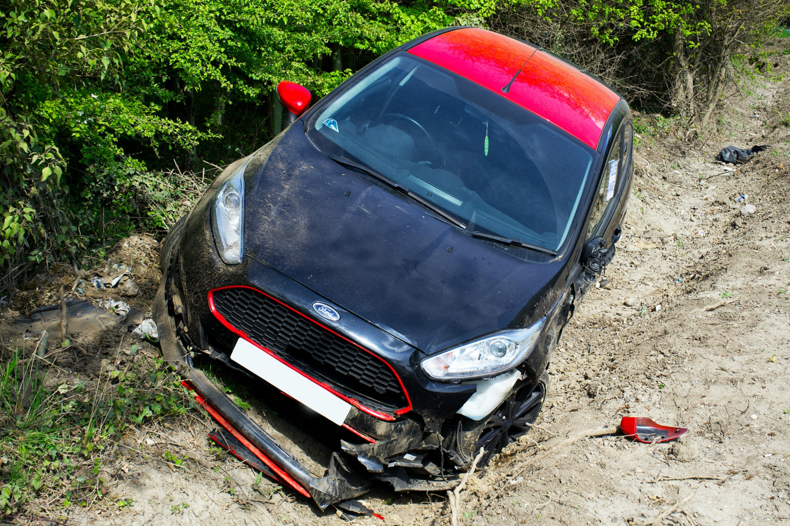

Perizie assicurative
Valutazioni tecniche per danni a veicoli, immobili, beni aziendali, incendi e allagamenti. Forniamo documentazione completa, imparziale e utilizzabile a fini assicurativi o legali.
Consulenze Tecniche di Parte (CTP)
Supporto tecnico in controversie civili, mediazioni e arbitrati. Lavoriamo a fianco di avvocati e privati per tutelare gli interessi del cliente con competenza ed equilibrio.
Incarichi giudiziari
Disponibili per incarichi come CTU nei Tribunali di Taranto e provincia. Offriamo consulenze peritali per il supporto alla magistratura o per parti in causa.

Stime patrimoniali e inventari
Effettuiamo valutazioni dettagliate di patrimoni mobiliari e immobiliari per fini fiscali, successori, assicurativi o aziendali.
Assistenza post-sinistro
Seguiamo il cliente in tutte le fasi successive a un sinistro: dalla stima del danno alla liquidazione da parte della compagnia assicurativa.
Ricostruzione dinamica dei sinistri
Utilizziamo software e tecniche avanzate per ricostruire l'esatta dinamica di un incidente stradale, utile in fase legale o peritale.

Valutazioni pre-acquisto
Analisi tecniche su immobili o veicoli prima dell'acquisto, per individuare difetti o problematiche nascoste e tutelare l'acquirente.